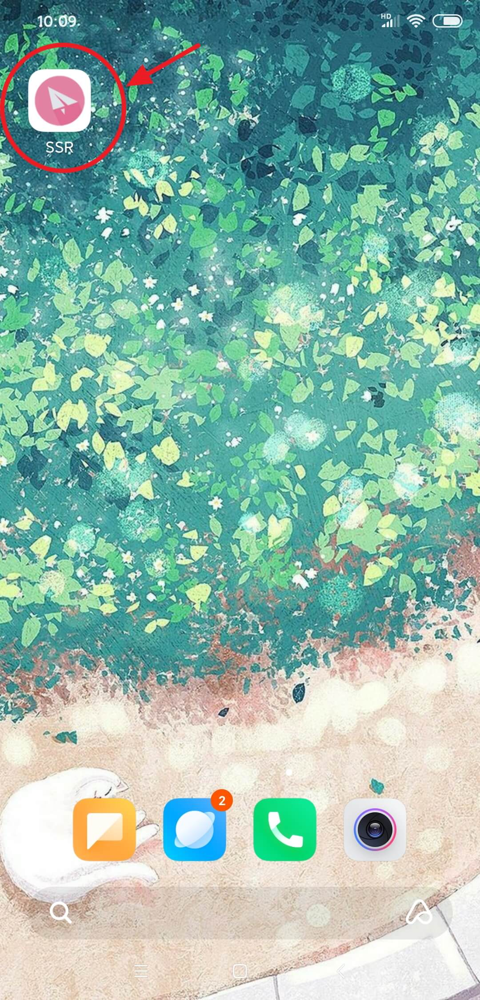
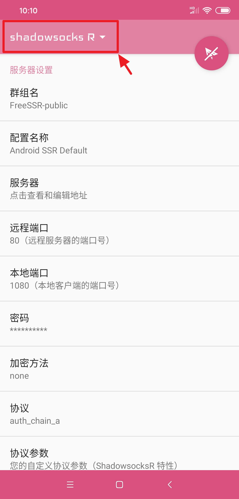
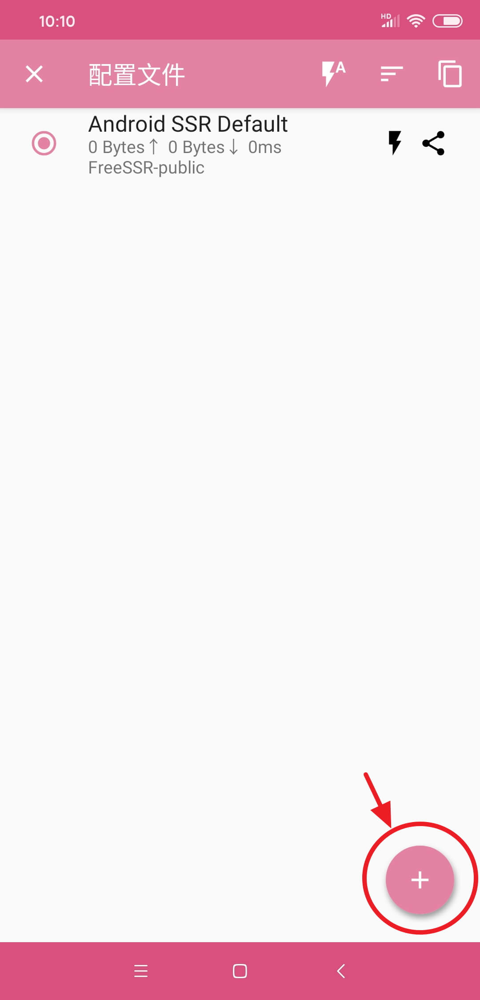
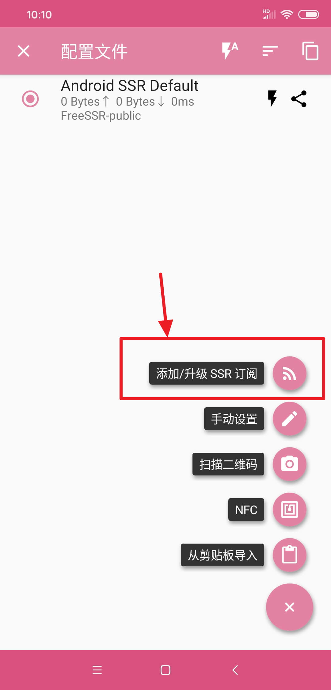
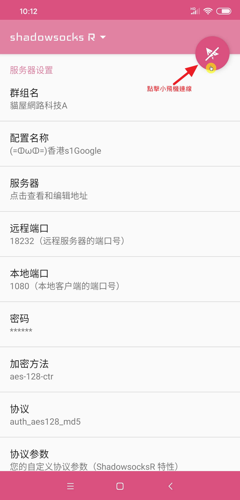

打開 SSR(ShadowsocksR) app
點擊左上方 ShadowsocksR 字樣,進入目錄列表
點擊右下方 + 按鈕,打開功能列
點選 添加/升級 SSR 訂閱

1. 先點擊打開 "自動更新" 功能
2. 在點擊添加訂閱地址
1. 將您在 猫屋网路科技网站中 "快速開始" 頁面中的訂閱地址填入
2. 點擊確定,這一步驟請確定您的網路正常(貓屋訂閱地址在中國境內網路可以正常運作)
1. 訂閱地址添加成功後,您可以在訂閱列表中看到 "貓屋網路科技A" 群組名稱(根據購買商品會有所不同)
2. 按 "確定並升級" 下載服務節點
成功下載節點服務後您可以在列表中看到
1. 節點名稱
2. 群組名稱
3. 點擊節點進入節點頁面
進入節點頁面點擊右上方小飛機按鈕,進行連線

連線成功後,你會看到 :
1. 網路流量
2. 檢查網路連接
兩個地方會有KB數字變化,代表您已成功與貓屋翻牆節點連線,
到這裡你就可以開始翻牆啦